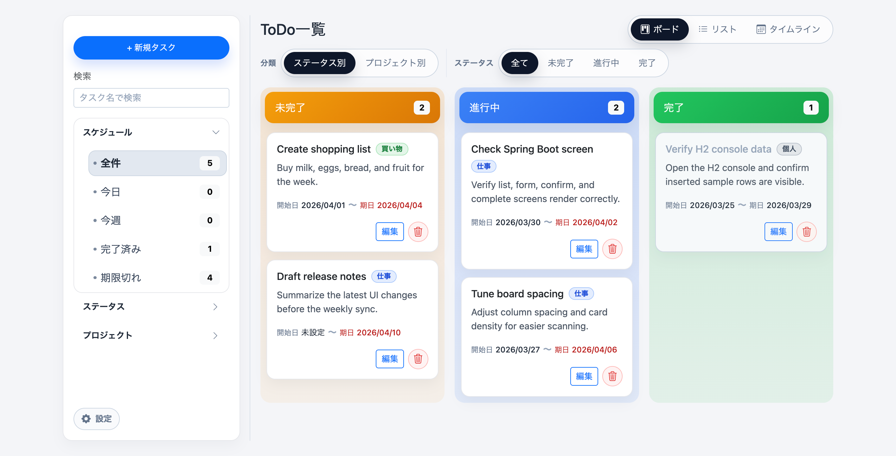
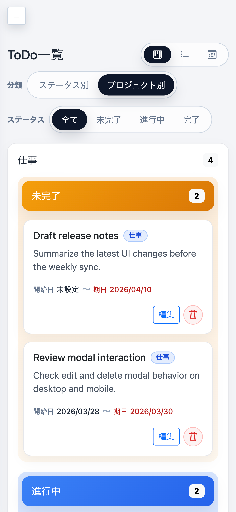

AIを活用したプログラミング手法で、Spring Bootアプリケーションを開発しました。日常的に使いやすいToDoアプリになるよう設計しました。
URL
https://spring-app0331-s2x5.onrender.com
担当
設計
制作期間
25時間
使用ツール
Spring boot(フレームワーク)、Render(デプロイ)、Chat GPT codex、Visual Studio Code
目的
AIを活用したアプリケーション開発の学習を目的に、誰でも直感的に操作できるシンプルなTodoアプリを開発しました。
ターゲット
余計な機能がないシンプルな設計で、簡単にTodo管理をしたい方。
工夫した点
・Spring bootのプロジェクトの作成と初期設定から行い、画面設計→フォーム送信データを次の画面に渡す→データベース設定(H2データベース)→ModelとMapperを作成しデータ登録→一覧に表示といった必要な設定を1つずつ確認しながら制作をしていきました。基本の機能が実装できたところで、サイドバーの追加やタイムラインなどへの切り替え、編集・削除・検索機能などを追加していきました。
・直感的にも使えるように、各タスクはドラッグ&ドロップで移動可能にして、ステータスも自動で変更されるよう調整を重ねました。
・自分が使うなら理想的なToDoアプリはどんな機能があると良いか、誰が使っても使いやすいかという視点から、機能と画面設計をしていきました。